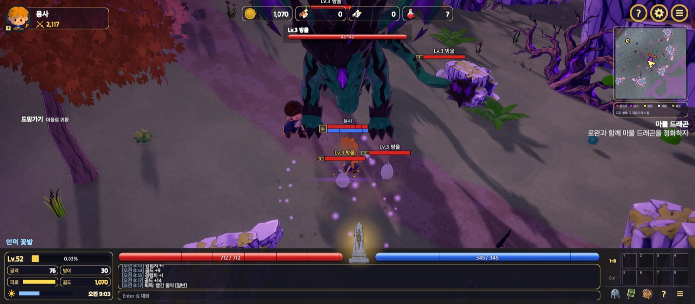
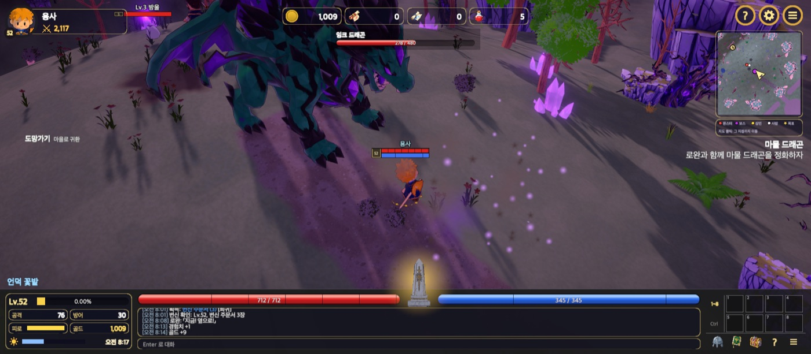
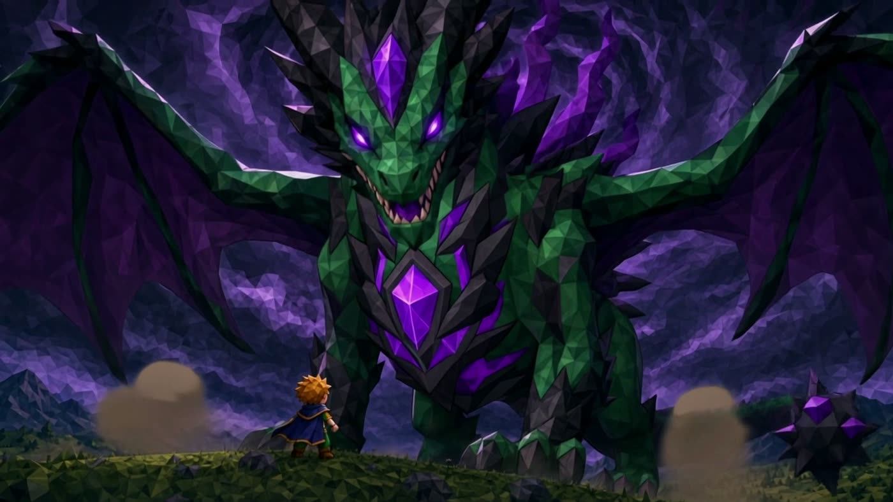
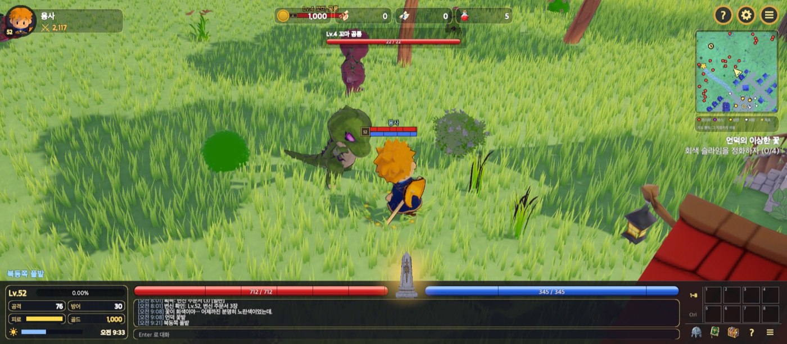
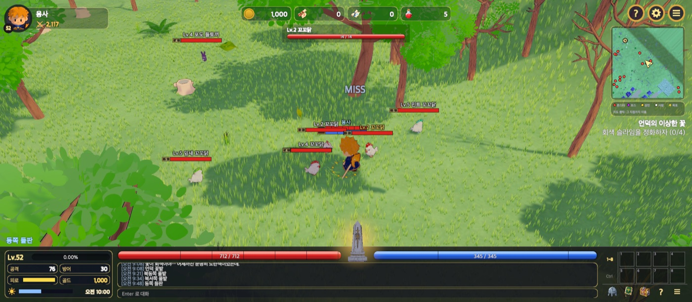

진행 중 프로젝트 · 기준일 2026-10-18
Unity 6 3D 액션 RPG
「일곱 봉인석」
Unity 6 · URP · C# 로 개발 중인 3D 액션 RPG 입니다. 게임 규칙을 상태 없는 규칙 클래스로, 수치를 DB 표로 분리해 규칙 하나하나를 자동 테스트로 고정했고, 컴파일 경고 0 · 테스트 · 플레이 검사 · 부하 측정 · 빌드 검사를 통과해야만 커밋되는 개발 체계를 만들었습니다. 구현은 AI 코딩 에이전트(Claude Code)가 이 체계 안에서 하고, 사람은 설계안 결정과 검수를 맡습니다.
- 엔진
- Unity 6.6 · URP 17.6
- 언어
- C# 37,187줄 (테스트 10,328줄)
- 기간
- 2026-10-05 ~ 진행 중 (작업일 12일)
- 역할
- 설계안 결정 · 개발 체계 설계 · 검수, 구현은 에이전트
요약
2026-10-18 저장소 측정
2주 동안 커밋 218건 · GitHub 이슈 208건을 처리했습니다. 전투 · 성장 · 아이템 · 강화 · 마법 · 변신 · 상점 · NPC 대화 · 날씨 · 낮밤 · 저장 · 장별 콘텐츠 내려받기를 구현했고, 게임 규칙 93개 클래스와 수치 표 23개를 EditMode 테스트 593건으로 검사합니다.
*Rules게임 화면
보스전 · 사냥 · 마을 · 창. 연출 영상 1컷 외에는 플레이 모드 게임 카메라 캡처
보스전 0장 보스 「마물 드래곤」 · 보스 스테이지



사냥 0장 들판 · 출현 구역 11개 · 동시 54마리


마을 · 창


기술 스택
패키지는 저장소 manifest 기준
unity command eval)로 에디터 제어, zsh 검사 스크립트 30개, git pre-commit 훅, 에디터 장기 작업 큐(EditorJob)아키텍처
데이터 → 메모리 → 규칙 → 장면
| 폴더 | 파일 · 줄 | 내용 |
|---|---|---|
| Items | 44 · 3,052 | 장비 칸 10개, 등급, 강화 규칙 · 연출 · 무기 오라, 드롭 표, 상점, 소지품 탭, 장비 외형 교체 |
| World | 18 · 1,596 | 낮밤 · 해 방향, 무작위 날씨, 풀 밭 생성, 숲 분위기, 작은 지도(회전 · 클릭 이동), 안전 지대 |
| Fx | 11 · 1,292 | 타격 · 사망 · 강화 · 스킬 이펙트, 파티클 시스템 재사용(EmitParams), 피해 숫자 |
| Monsters | 25 · 1,284 | AI(선공 · 후공 · 배회 · 추격), 레벨 정책, 출현 규칙, 보스 2페이즈 · 졸개 소환 |
| Data | 9 · 1,024 | DataTables, JSON ↔ DB 행 변환(TableCodec), DB 표 읽기 · 쓰기, 플레이어 저장소 |
| Progress | 11 · 779 | 레벨 표 99행, 경험치 곡선 계산, 스탯 분배, 퀘스트 경험치 |
| Title | 8 · 733 | 타이틀 · 캐릭터 선택, 로딩 화면(데이터 → 장 내려받기 → 장면), Addressables 장 묶음 |
| 그 외 | 81 · 4,734 | 캐릭터 · 마법 · 변신 · 단축키 · 대화 · 소리 · 설정 · 저장 · 스테이지 · Core(싱글턴 · 공통 도우미) |
설계 원칙
- 규칙 · 상태 · 컴포넌트 분리: 계산은 상태 없는
*Rulesstatic 함수, 상태는BasicBiz<T>싱글턴, 화면 · 입력은 MonoBehaviour. 규칙은 장면 없이 테스트한다 - 수치는 코드 밖에: 마을 범위 · 출현 간격 · 강화 확률 · 드롭 확률 · 경험치 배율까지 표에서 읽는다. 코드 상수 확률 배열은 두지 않는다
- 공통 경로 하나: 표 읽기 · 파티클 생성 · 장면 전환 · 플레이어 판정은 정해진 한 곳만 쓰고, 테스트가 우회 호출을 찾는다
동시성 · 다중접속 대비
- DB 읽기는
Task.Run백그라운드, 적용은 메인 스레드에서 한 번. 여러 스레드가 읽는 표는 만든 뒤 바꾸지 않는 사전이고 참조만 바꾼다 - 싱글턴 생성은 이중 검사 잠금, 가변 상태는
Sync잠금. 도메인 리로드를 끈 에디터에서도 플레이 시작 · 종료 때 모든 인스턴스를 버린다 - 저장 쓰기는 순서를 지키는 백그라운드 큐, 종료 · 타이틀로 나갈 때 Flush
핵심 코드
저장소에서 발췌, … 는 생략 표시
① 싱글턴 기반 클래스 BasicBiz<T>
문제: 관리 클래스를 static class 로 두니 상태가 흩어지고, 도메인 리로드를 끈 에디터에서 이전 플레이 값이 다음 플레이에 남았습니다. 해결: public 은 Instance 하나, 생성자는 비공개, 플레이 시작 · 종료 때 등록된 인스턴스를 모두 버립니다. Data 계층에 public static 멤버 · 공개 생성자가 없는지 테스트가 검사합니다.
public abstract class BasicBiz<T> where T : BasicBiz<T> { static T _instance; static readonly object Gate = new(); protected static readonly object Sync = new(); public static T Instance { get { var i = _instance; if (i != null) return i; lock (Gate) { if (_instance == null) { _instance = (T)Activator.CreateInstance(typeof(T), nonPublic: true); BizRegistry.Register(Reset); } return _instance; } } } … } public static class BizRegistry { … [RuntimeInitializeOnLoadMethod(RuntimeInitializeLoadType.SubsystemRegistration)] static void ResetOnPlay() => ResetAll(); }
② 데이터 표: 백그라운드 DB 읽기와 한 번의 적용
요구: 수치를 DB 표로 관리하되 플레이 중 DB 왕복은 없어야 합니다. 구현: 실행 시작 때 표 23개를 한 접속 · 한 명령으로 읽기 시작하고, 로딩 화면이 진행률(n/23)을 보여 주며 기다린 뒤 메인 스레드에서 적용합니다. 실패하거나 접속 정보가 없으면 JSON 을 씁니다. 적용하면 Version 이 올라 각 표 캐시가 다시 읽습니다.
public sealed class DataTables : BasicBiz<DataTables> { Dictionary<string, string> _db; // 적용된 DB 표 (만든 뒤 바꾸지 않는다) Task<(Dictionary<string, string> tables, List<string> missing)> _loading; … public void StartLoading(DbSettings s) { lock (Sync) { … var templates = new Dictionary<string, string>(); foreach (var n in Names) templates[n] = ResourceJson(n); // 표 틀은 메인 스레드에서 _loading = Task.Run(() => { var got = DbTableStore.Instance.ReadAll(s, names, n => templates.TryGetValue(n, out var j) ? j : null, out var missing, () => Interlocked.Increment(ref _read)); return (got, missing); }); } } public bool Apply() // 메인 스레드 { lock (Sync) { var task = _loading; if (task == null || !task.IsCompleted) return false; _loading = null; if (task.IsFaulted || task.IsCanceled) { _db = null; Status = "JSON (DB 접속 실패)"; return true; } var (tables, missing) = task.Result; _db = tables; Version++; // 참조 교체 → 읽는 쪽은 잠금 없이 읽는다 return true; } } }
③ 강화 규칙: 난수를 인자로 받는 순수 함수
설계: 규칙 함수는 난수를 직접 만들지 않고 roll · extra 로 받아, 성공 · 실패 · 축복 · 저주 경로를 테스트가 정확한 값으로 재현합니다. 성공 확률은 코드 배열이 아니라 enchant 표(DB 행)에서 읽습니다.
public static class EnchantRules { public const int MinEnchant = -7, SafeEnchant = 6; public static int MaxEnchant(ItemType type) => type == ItemType.Weapon ? 15 : 10; … // roll: 0 이상 1 미만의 난수, extra: 축복 주문서의 추가 상승폭을 고를 난수 public static EnchantResult Apply(Kinds.EnchantScroll scroll, ItemInstance target, double roll, double extra, EnchantTable table = null) { var r = new EnchantResult { before = target.enchant, after = target.enchant, chance = SuccessChance(scroll, target, table) }; if (!CanUse(scroll, target)) { r.outcome = EnchantOutcome.NotAllowed; return r; } … if (roll >= r.chance) { target.enchant = Math.Max(MinEnchant, target.enchant - 1); r.after = target.enchant; r.outcome = EnchantOutcome.Failed; return r; } int gain = 1; if (scroll.scrollKind == ScrollKind.Blessed && target.enchant < eq.safeEnchant) { gain = 1 + (int)Math.Floor(extra * 3); // 1~3 gain = Math.Min(gain, eq.safeEnchant - target.enchant); // 안전 강화를 넘지 않는다 gain = Math.Max(gain, 1); } target.enchant = Math.Min(eq.maxEnchant, target.enchant + gain); r.after = target.enchant; r.outcome = EnchantOutcome.Success; return r; } }
④ 프레임 조절: 30 fps 를 지키는 화질 단계
요구: 모든 장면 30 ~ 최대 40 fps, 발열 감소. 구현: 단계는 URP 에셋 값의 상한이고, 평균이 2초 동안 기준 아래면 한 단계 내리고 8초 동안 여유가 있으면 올립니다. 올린 직후 다시 떨어지면 120초 동안 올리지 않아 두 단계 사이를 오가지 않습니다. 단계 전환은 순수 함수라 테스트로 고정했습니다.
public static class FrameRules { public const int MaxFps = 40, MinFps = 30, RecoverFps = 50, BackgroundFps = 15; public const float DownSeconds = 2f, UpSeconds = 8f; public const float MinRenderScale = 0.85f, MinShadowDistance = 35f; // 단계별 상한 (실제 값 = min(에셋 값, 상한)) public static readonly Tier[] Tiers = { new(1f, 1000f, 4, 8), // 0 에셋 값 그대로 new(1f, 1000f, 4, 2), // 1 MSAA 2 new(1f, 40f, 2, 1), // 2 MSAA 끔, 그림자 2단계·40m new(MinRenderScale, MinShadowDistance, 2, 1), // 3 최저 }; public static int Next(int tier, float below, float above, bool upBlocked = false) { if (below >= DownSeconds && tier < Tiers.Length - 1) return tier + 1; if (above >= UpSeconds && tier > 0 && !upBlocked) return tier - 1; return tier; } // 에디터는 바꾸지 않는다: 에디터 프레임은 Scene 창·인스펙터 그리기가 섞여 게임 프레임이 아니다 public static bool Adjusts(bool isEditor) => !isEditor; }
⑤ 규칙을 검사로: 코드 규약 테스트와 pre-commit 훅
정한 규칙은 문서로 끝내지 않고 실패하는 검사로 만듭니다. 왼쪽은 공통 경로를 우회하는 호출을 찾는 테스트, 오른쪽은 마지막 테스트 · 플레이 검사가 통과이고 커밋할 파일보다 나중이어야 커밋을 허용하는 훅입니다.
[Test] public void 공통_경로를_우회하는_호출이_없다() { var rules = new (string forbidden, string only, string why)[] { ("Resources.Load<TextAsset>", "DataTables.cs", "표는 DataTables.Json 으로 읽는다"), ("AddComponent<ParticleSystem>()", "FxSystems.cs", "파티클 시스템은 FxSystems.Make 로 만든다"), ("SceneManager.LoadScene(", "SceneLoader.cs", "장면 전환은 SceneLoader.Load (로딩 화면)"), … }; var bad = new List<string>(); foreach (var f in GameScripts) { var src = File.ReadAllText(f); foreach (var r in rules) if (!f.EndsWith(r.only) && src.Contains(r.forbidden)) bad.Add($"{f}: {r.forbidden} → {r.why}"); } CollectionAssert.IsEmpty(bad); }
TESTS=Temp/run_tests_result.json; PLAY=Temp/play_check_result.txt
fail() { echo "커밋 중단: $1"; exit 1; }
[[ -f $TESTS ]] || fail "테스트 결과 없음"
[[ -f $PLAY ]] || fail "플레이 검사 결과 없음"
(( $(grep -c '"Status": "Failed"' $TESTS) == 0 )) \
|| fail "마지막 테스트 결과에 실패가 있다"
[[ "$(head -1 $PLAY)" == PASS* ]] \
|| fail "마지막 플레이 검사가 통과하지 않았다"
git diff --cached --name-only --diff-filter=ACMR | while read -r f; do
…
[[ $TESTS -nt "$f" ]] || fail "$f 이(가) 마지막 테스트보다 나중에 바뀌었다"
[[ $PLAY -nt "$f" ]] || fail "$f 이(가) 마지막 플레이 검사보다 나중에 바뀌었다"
done || exit 1기술 문제 해결
증상 → 원인 → 조치, 같은 문제를 막는 검사까지
| 증상 | 원인 | 조치 · 결과 |
|---|---|---|
| 플레이 중에만 고정 물체가 분홍색 | GPU Resident Drawer 를 켜면 DOTS 인스턴싱 변형을 쓰는데 MToon10 셰이더에 그 변형이 없음. 에디터 렌더에서는 보이지 않음 | 모든 URP 에셋에서 끔. 플레이 검사가 해당 경고를 오류로 세고, 화면이 바뀌는 작업은 플레이 카메라 캡처를 직접 확인하도록 규칙화 |
| 몬스터 처치마다 메모리 증가 | 처치 연출이 재질을 복제하고 해제하지 않음 | 부하 테스트(생성 · 처치 60마리 × 5회 + 60초 사냥)로 발견해 수정. 객체 · 실행 중 재질 · 파티클 · 관리 힙이 원래 값으로 돌아오는지 매번 판정 |
| 몰림 구간 프레임 저하 | 타격마다 파티클 시스템을 새로 만들고 지움 | 종류별 시스템 8개를 미리 두고 EmitParams 로 발사, 버프 입자는 풀. 플레이어 루프 9~13ms → 6.8ms, 파티클 시스템 92 → 18 |
| 에디터에서 화면이 흐려지고 그림자가 사라짐 | 프레임 조절기가 Scene 창 그리기가 섞인 에디터 프레임을 게임 프레임으로 보고 최저 단계까지 내림 | 에디터에서는 단계를 바꾸지 않음(Adjusts(isEditor)), 최저 단계도 렌더 배율 0.85 · 그림자 35m 아래로 내리지 않음 |
| 윤곽선에 회색 틈 · 머리 모양 뭉개짐 | 한 메시에서 윤곽선 패스를 쓰면 각진 면의 법선이 갈라져 틈이 생기고, 법선을 평균하면 몸 모양이 바뀜 | 몸은 원래 메시, 윤곽선은 법선을 평균한 메시 사본을 같은 뼈에 붙인 별도 렌더러로 분리 |
| 생성 건물 1채 약 200만 삼각형 | 3D 생성 도구가 면 수를 지정하지 못함 | Blender 스크립트로 정점 병합 뒤 Decimate 해 집 2만 · 여관 4만 삼각형. 1만 이하로 줄이면 텍스처 경계가 찢어지는 것을 확인하고 하한으로 둠 |
| 지붕 위에서 몬스터 출현 | NavMesh 가 지붕 윗면에도 구워져 섬 193개가 생김 | 키 1.5m 넘는 충돌체 윗면을 Not Walkable 로 지정해 섬 193 → 1, 출현 점의 지형 높이 ±0.8m 검사 추가 |
| 캐릭터 발밑 표시가 몸에서 어긋남 | 프리팹 생성기가 검 · 망토 · 방패까지 포함한 경계 가운데를 원점으로 잡아 몸통이 0.35m 뒤에 섬 | 대기 자세의 몸통 렌더러 가운데를 원점에 맞추도록 생성기 수정, 캐릭터 프리팹 전부를 테스트로 검사 |
| 검사 결과가 실제 코드와 다름 | 컴파일이 깨진 상태에서 검사가 이전 어셈블리로 실행됨 | 모든 검사 앞에 컴파일 게이트: 오류 · 경고 0, 어느 어셈블리에도 들어가지 않은 새 스크립트까지 확인 |
| 빌드에서만 예외 24회 | 에디터 검사가 다루지 않는 빌드 실행 경로 | 빌드 실행 로그(Player.log)의 예외 · 오류 0 을 빌드 검사 조건에 추가 |
| 에디터가 영구 정지 | MCP bridge 의 비동기 확인을 메인 스레드에서 GetResult() 로 기다려 교착 | 메인 스레드에서는 기다리지 않고 호출, 5초 넘는 에디터 작업은 작업 큐(EditorJob)로 넘기고 결과 파일을 기다림 |
구현한 시스템
게임 기본 시스템을 먼저 끝내고 시나리오로 넘어가는 순서
검증 · 성능
통과하지 않으면 커밋되지 않음
- 컴파일 게이트세 어셈블리 컴파일 오류 · 경고 0
- EditMode 테스트593건 전체 통과
- 플레이 검사플레이 모드 오류 0, 프레임 진행, 게임 카메라 캡처
- 부하 테스트생성 · 처치 반복 후 객체 · 재질 · 힙 회귀
- 빌드 검사빌드 경고 0, 실행 로그 예외 0, fps 30 이상
- pre-commit마지막 검사가 통과이고 파일보다 나중
| 테스트 종류 | 예 |
|---|---|
| 규칙 · 수치 | 강화 성공 · 실패 · 축복 · 저주 경로, 레벨 곡선(0장 8시간 = Lv10), 난이도별 타수 비율, 보스를 이기는 레벨대, 명중 · 회피 한도, 드롭 확률 레벨대 |
| 데이터 표 | JSON ↔ DB 행 왕복, 아이템 행의 안전 · 최대 강화가 규칙과 같은지, 생성기가 있는 행을 보존하는지 |
| 장면 · 프리팹 | 장면을 열어 컴포넌트 구성 검사, 빌드 장면 전부 툰 재질 · 윤곽선, 캐릭터 프리팹 원점, 몬스터 레이어, 생성 모델 삼각형 수 상한 |
| 코드 규약 | 공통 경로 우회 금지, 컴포넌트 클래스는 자기 이름 파일, 상속 없는 class 는 sealed(리플렉션으로 세 어셈블리), 주석 금지 유형, Data 계층 public static 금지 |
- 프레임 상한 40(120Hz 화면에서 간격이 고르고 60 대비 작업량 1/3 감소), 창이 뒤에 있으면 15. 빌드 실행 측정(
-dq5soak)으로 메모리 · 객체 · 메시 · 재질 수 · fps 를 기록합니다. - 매 프레임 비용 정리: HUD 글자 · 버프 격자는 값이 바뀐 때만 갱신, 낮밤 조명은 0.25시간 단위, 컴포넌트 조회는 한 번 재서 넘김, 지도 그림은
Graphics.CopyTexture(CPU 읽기 없음).
아트 파이프라인
생성 모델 → 감면 · 리깅 → 툰 셰이딩 → 룩북 승인
- 설정화인물 · 몬스터 · 소품 2D 그림을 이미지 생성 도구로
- 3D 생성면 수 지정 · 자동 리깅 모델, 인물 3,000 삼각형
- Blender 스크립트감면, 보스 리깅(뼈 34 · 동작 10)
- 툰 셰이딩MToon10 + 윤곽선 사본 메시
- 룩북 승인정면 · 옆 · 동작 프레임 시트와 GIF 확인 뒤 반영
- 프리팹 · 동작 컨트롤러는 에디터 생성기 코드로 만들고, 다시 만들 때 GUID 를 유지해 장면 참조가 끊기지 않게 합니다.
- 크레딧을 쓰는 생성 호출은 에이전트가 정하지 않습니다. 도구 설정의 승인 목록(
permissions.ask)으로 호출마다 승인 창이 뜨게 고정했습니다.
AI 에이전트 운용
Claude Code · 권한을 나눠 맡김
WMS 프로젝트에서 만든 절차를 게임 개발에 옮겼고, 이번에는 기술 결정 권한을 에이전트에 넘겼습니다. 대신 위의 검사가 통과하지 않으면 커밋할 수 없습니다.
사람이 정하는 것
- 게임 디자인 · 시나리오 · 그림체 · 화면 구성 · 수치 방향
- 생성 모델 · 동작 · 이펙트의 룩북 승인
- 크레딧을 쓰는 생성 호출의 대상 · 횟수
- 결정 요청 이슈(question 34건)
에이전트가 정하고 실행하는 것
- 구현 방식 · 리팩터링 · 검사와 도구 추가
- 요청을 이슈로 기록하고 계획 문서(27개)에 순서 · 완료 기준을 적은 뒤 개발
- 개발 중 발견한 기술 문제는 고치고 보고
- 결정이 바뀌면 같은 커밋에서 인수인계 문서 갱신(존재 · 문구를 테스트가 검사)
진행 상황
2026-10-05 ~ 10-18
- 10-05Unity 6 URP 프로젝트 생성, 테스트 · 플레이 검사 스크립트
- 10-09 ~ 13인벤토리 · 장비 · 레벨 · 단축키 · NPC 대화 · 몬스터 출현 규칙, 툰 그림체 적용
- 10-14 ~ 15낮밤 · 소리 · 지도, 수치 표 DB 이관, 전체 코드 검토 뒤 이슈 8건 정리, 싱글턴 · sealed · 주석 규칙과 검사. 하루 커밋 53건
- 10-16상하단 HUD · 창 통일 · 마법 21개 · 스탯 분배 · 강화 연출 · 보스 게이트, 빌드 최적화(최대 40fps · Mesh LOD · 윤곽선 · 풀 거리 컬링)
- 10-17장비 칸 10개 · 갑옷 외형 · 무작위 날씨 · 보스 2페이즈, 장별 콘텐츠를 Addressables 원격 묶음으로
- 10-180장 구역 레벨과 경험치 곡선 재계산, 매력 스탯 · 직업별 마법 목록, 1장 몬스터 묶음 · 미리 읽기
다음 순서
- 기본 시스템 마무리: 장비 등급 · 랜덤 옵션 표, 1장 장면
- 서버 · 계정: 다중접속 전에 저장 데이터를 플레이어별로 격리, 채팅 · 다중접속 공유 자료는 불변 스냅샷 방식 유지
- 연출 · 시나리오: 전체 10장 설계와 장면 334개 대본 초안을 확정한 뒤 구현